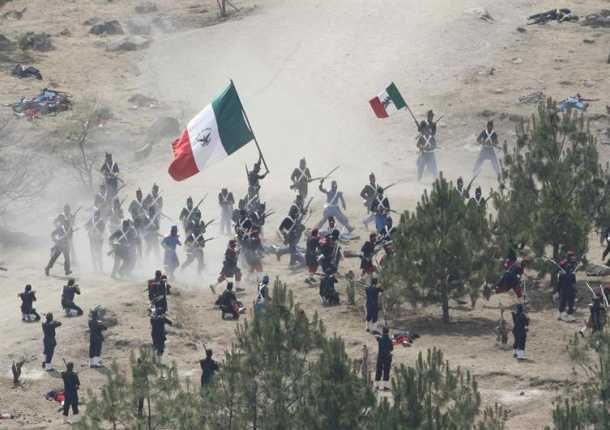

Mientras se libraba la batalla, en el Palacio Nacional y en la Ciudad de México en general se vivía un ambiente de tensa espera. Lo último que se sabía de Puebla era el telegrama enviado por Zaragoza hacia las 12:30 del día, en el que avisaba que el fuego de artillería de ambos lados había iniciado. Luego, silencio. Ante la incertidumbre, el gobierno había hecho salir precipitadamente al general Florencio Antillón al mando de los Batallones de Guanajuato, quedando como guardianes de la capital sólo 2,000 hombres del Regimiento de Coraceros Capitalinos y algunos centenares de milicianos pobremente armados. Si las tropas guanajuatenses se perdían, la capital quedaría desprotegida.
El saldo final de la batalla fue de 476 muertos y 345 heridos del lado francés, así como 83 muertos, cerca de 131 heridos y 12 desaparecidos para el Ejército de Oriente. A las 7 de la noche del día 6 de mayo arribaron a Puebla el general Antillón y sus tropas; Zaragoza esperaba un nuevo ataque de Lorencez, pero éste, el día 8 de mayo, dispuso la retirada hasta San Agustín del Palmar, siendo "saludado" por la artillería republicana y la Banda de Guerra de los Carabineros, quienes tocaron "Escape".
El 5 de septiembre de 1862, todavía acuartelado en Puebla, el general Zaragoza contrajo tifo y falleció tres días después. Lo sustituyó en el mando del Ejército de Oriente el general Jesús González Ortega, quien se encargaría de la defensa de la ciudad ya que se esperaba el regreso de los franceses, reagrupados y con refuerzos, lo cual sucedió en marzo del siguiente año. Los historiadores concuerdan en señalar el talento de Zaragoza como organizador y motivador de sus tropas. Antes de la batalla, las arengó diciéndoles que si bien los franceses eran considerados "los primeros soldados del mundo", ellos eran "los primeros hijos de México", lo cual tuvo tal efecto en la moral de sus soldados que su determinación por defender la plaza ante los invasores compensó sus carencias materiales y de disciplina. Además, no temió tomar decisiones arriesgadas, como prescindir de los 2000 efectivos que O'Horan se llevó para batir a Leonardo Márquez, y en el curso de la batalla actuó con serenidad y efectividad. Se le considera héroe nacional y en su honor, tiempo después, Juárez renombró a la ciudad como Heroica Puebla de Zaragoza.
Cabe atribuir parte de la responsabilidad en el resultado de la batalla a Lorencez, por decidir lanzarse en primer lugar contra Loreto y Guadalupe en lugar de ir sobre la ciudad. Esta acción no carece de sentido si se toma en cuenta que el general francés se encontraba confiado en la victoria por lo que había sucedido en las Cumbres, además de que bajo la lógica militar de su tiempo, primero había que atacar al enemigo en sus posiciones más fuertes. En todo caso, ensoberbecido por la superioridad de los franceses, no contó con la férrea resistencia mexicana y cometió yerros garrafales: así, por ejemplo, fue famosa su orden de colocar sus cañones en batería a dos kilómetros y medio de las fortificaciones poblanas, lo cual fue calificado por el propio Napoleón III como un disparate ya que las balas llegaban a sus blancos, pero sin fuerza. El conde fue repatriado y lo sustituyó Frédéric Forey en el mando de las tropas expedicionarias. Cuando en Francia se supo la derrota del ejército francés, originó dolor, histeria y llanto, más aún cuando llegaron las historias de que los indígenas zacapoaxtlas (que en realidad se trataba del sexto Batallón de Guardia Nacional del Estado de Puebla) habían atacado con machetes, arma desconocida en Europa, y se comían los cadáveres. El resto de Europa, con incredulidad, sorpresa y asombro, comentaban como el ejército francés, invicto desde la Batalla de Waterloo en 1815, había sido derrotado en México, un ejército considerado el mejor del mundo, el vencedor en la conquista de Argelia y de la Indochina francesa (hoy Vietnam), había sido derrotado por un país tropical, utilizando tácticas de guerra poco utilizada en Europa, como era la Guerra de Guerrillas.
La guerra de guerrillas efectivamente fue utilizada en México, pero ya antes se conocía tal táctica en Europa, y más en concreto en España, lugar donde se dio por vez primera este tipo de guerra 400 años antes de Cristo, e incluso contra la invasión de las tropas de Napoleón a principios del siglo XIX, y que por tal motivo en este país se le dio tal nombre, guerra de guerrillas.


 1
1